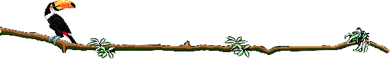

|
|
BUSTANI YA MASHAIRI SHAIRI YA KWANZA YAITWA TITI LA MAMATiti la mama litamu,hata likiwa la mbwa, Kiswahili naazimu,sifayo iliyofumbwa, Kwa wasiokufahamu,niimbe ilivyo kubwa, Toka kama mlizamu, funika palipozibwa, Titile mama litamu ,Jingine halishi hamu. Lugha yangu ya utoto,hata sasa nimekua, Tangu ulimi mzito,sasa kusema najua, Ni sawa na manukato,moyoni mwangu na pua, Pori bahari na mto,napita nikitumia, Titile mama litamu,jingine halishi hamu. TRANSLATION OF THE FIRST POEM One's mother's breast is the sweetest Canine it may be, And thou,Swahili,my mother- tonque, art still the dearest to me. My song springs forth from a welling heart, I offer thee my plea That who have not known thee, may join in hormage to thee. One's mother's breast is the sweetest, no other so satisfies. The speech of my childhood ,now I am fully grown I realize thy beauty and have made it all on my own And though refreshest my spirit like the scent of the roses blown Through desert and o'er ocean may I thy praises known. One's mother's breast is the sweetest, no other so satisfies. SHAIRI YA TATU YAITWA UWATAPO HAKI YAKO
Namba nawe mlimwengu, pulikiza matamko
Nikweleze neno langu, uzinduwe bongo lako
Nayo nda M'ngu si yangu, na ayani haya yako
Uwatapo haki yako, utaingiya motoni
2
Simama uitete, usivikhofu vituko
Aliyo nayo mwendee, akupe kilicho chako
Akipinga mlemee, mwandame kulla endako
Uwatapo haki yako, utaingiya motoni
3
Amkani mulolala,na wenye sikio koko
Isiwe mato kulola,natutizame twendako
Tuwate na kuduwala,usingizi si mashiko
Uwatapo haki yako,utaingiya motoni
4
Teteya kwa kula hali, usiche misukosuko
Siche wingi wala mali,sabilisha roho yako
Unyonge usikubali, ukaonewa kwa chako
Uwatapo haki yako, utaingiya motoni
5
Siche kifaru na ndovu, wangazidi nguvu zako
Wapempe kwa uwekevu, unusuru haki yako
Siandame wapumbavu,kilicho chako ni chako
Uwatapo haki yako, utaingiya motoni
6
Cha mtu hakifitiki,kikafungiwa kiliko
Huzuka kikawa hiki,kazana utwae chako
Uwatapo yako haki,fahamu ni dhara kwako
Leo na kwa Mola wako,utaingiya motoni
7
Fumbuwa unyang'arize, uone duniya yako
Bure sijiangamize,kuangalia wendako
Utatupa upoteze,wende ambapo si pako
Uwatapo haki yako,utaingiya motoni
8
Kadhalika nako pia,huko ambako sikwako
Huwezi kujitetea,wala huwi na mashiko
Basi iwaze duniya,kwani ya kale hayako
Uwatapo haki yako ,utaingiya motoni
9
Kadi tamati shairi,sitii la ongezeko
Mwanati iwa tayari, utete haki yako
Unyonge usiukiri,Jifunge ufe kwa chako
Uwatapo haki yako, utaingiya motoni
by Ahmad Nassir from Malenga wa Mvita SHAIRI YA N'NE YAITWA "OWA"
Owa s'andame hadaa, moyo ukahadaiwa
Owa anaye kufaa, mke mwenye kusifiwa
Owa upate kuzaa, kama ulivyozaliwa
Owa ukijaaliwa, mupendane na mkeo
[2]
Owa aliye na kheri, muandamane kwa dini
Owa yai la johari, litiye nuru nyumbani
Owa mdomo mzuri, ukupambie lisani
Owa ungiye nyumbani, mupendane na mkeo
[3]
Owa moyo wa imani, usozumbua mafuja
Owa usiowe duni, anayeitwa kioja
Owa mtenda wa dini, ndiye mke mwenye haja
Owa utungiwe koja, mupendane na mkeo
[4]
Owa siowe tambara, linukiyalo vibaya
Owa mwanamke jura, mlekeze njema ndia
Owa usiowe sura, kutaka kuzangaliya
Owa mzuri tabiya, mupendane na mkeo
[5]
Owa kijana kitoto, mteshi wa kutekeya
Owa akwandike jito, mwenye kukuhurumiya
Owa usiowe zito, jabali likakwemeya
Owa aliye na haya, mupendane na mkeo
[6]
Owa s'andame uhuni, upate juwa kuzawa
Owa nami natamani, ela sijajaaliwa
Owa utiye chandani, pete uloiteuwa
Owa ujuwe kuowa, mupendane na mkeo
[7]
Owa uvishwe kilemba, na joho na mahazamu
Owa wapate kupamba, ukale twiba na tamu
Owa upambiwe chumba, upate tanganya damu
Owa usijidhulumu, mupendane na mkeo
[8]
Owa kinda la tausi, alo nadhifu mibele
Owa kiini cheusi, chendacho nyuma na mbele
Owa siowe tetesi, apaye watu uwele
Owa aliye lekele, mupendane na mkeo
[9]
Owa ualike watu, wahudhuriye arusi
Owa nawe uwe mtu, mkeo simnakisi
Owa muonyane utu, mukae mutaanasi
Owa mupane mepesi, mupendane na mkeo
[10]
Owa akukubaliye, akuizao siowe
Owa upendane naye, zamani sizo ujuwe
Owa akuridhiyae, mujikubali wenyewe
Owa mukae mutuwe, mupendane na mkeo
[11]
Owa chenye asimini, kikuba cha asiliya
Owa kilo na rihani, na waridi maridhiya
Owa kilicho na shani, na manukato kutiya
Owa ujuwe duniya, mupendane na mkeo
[12]
Owa utukuze cheo, na jina lipate kuwa
Owa apate mkeo, aambiwe meolewa
Owa kama waowao, moyo usiliye ngowa
Owa ujuwe kukuwa, mupendane na mkeo
BY AHMAD NASSIR FROM THE BOOK "MALENGA WA MVITA"
KUMBUKAHapana chako na changu, hivi vyote ni shirikaMimi wako wewe wangu, kipi cha kugawanyika? Kuungana walimwengu, ni neno lenye mwafaka, Linapendeza kwa Mungu, pamoja na malaika Kukwambia nenda zangu, sithubutu kutamka, Na kadhalika mwenzangu, sidhani hilo wataka, "Hutaki" lina uchungu, na kwangu ni kadhalika. Dunia ina mizungu, nikwambiayo kumbuka. Remember It's neither yours nor mine, all these are to be shared. I'm yours, you mine , what's there to divide Coming together for mortals, that's the thing to do, In God's eyes it is pleasing, and so with His angels. To tell you I am going away, that I dare not say, Neither you my companion, I think not that's what you want, To say "no" is bitter to you, and so it is to me The world is full of complications, that's what I say to you, remember. By Shaban bin Robert From "Anthology of Swahili Poetry, Kusanyiko La Mashairi" by Ali A. Jahadhmy, African Writers Series, Heinemann.
UZURI Beauty
Uzuri Wa uso mwema, beauty of the face is attractive
Unavuta vitu vyote, It draws to it all objects
vya macho ya kutazama, With eyes to perceive,
unapopita po pote, Whichever it passes by,
Walakini kwa kupima uzuri wa, but in comparison the beauty of
tabia bora character is best
uzuri kupita kupita huu the beauty that outshines
katika hii dunia In the universe
nawapa msisahau, I give you to hold fast,
Ni nzuri Wa tabia It's the beauty of character
Ni johari ya heshima duniani One's honour is the only true jewel
kila mara in the world.
tazama! dunia nzima Look! the whole world
Huendeshwa na tabia is conducted by by character,
kama tabia Si njema, If the character is weak,
si ajabu kupotea. No doubt one will stray,
Kitu kilicho adhama ni tabia Lucky is the one with character and,
na busara wisdom.
Kwa kutengeza tabia, Speaking of character,
Rai yangu na fikira My idea and conviction are
Vyuo katika dunia That places of learning in this work
Vingekuwa na tijara Would render a laudable service
kwa kuwa nayo daima sera na To insist upon discipline in and unfailly
tabia bora. courtesy
MVUVI
Ndimi mvuvi halisi, Kulla vuvi nalijuwa
Nivuwaye mikambisi, na papa wenye khatuwa
Wala sivui vingisi, mishipi haisumbuwa
Nimekwambiya elewa
2
Sivuwi bahari ndogo, hatia nanga fuoni
Havisimbika vigogo, vilivyozama majini
Na wala Sivuwi ngogo, vidagaa na mbinini
Siwavui asilani
3
Jabali hulijilisi, jishipi nikalitupa
Haotea mifulusi, na nguru na mijipapa
Si kasikazi Si kusi, khabari yangu nakupa
Wala sivui kwa pupa
4
Na nivuapo malema, huingia ndani ndani
Maji yangu ni ya pima, thalatha u thalathini
Na ndiyo ninayozama, lema halibwaga tini
Uliza mimi n'nani?
5
Na nivuapo maziyo, mavuvi ya kizamani
Kwa hino hali niliyo, huvua kwa kutamani
Hatafuta kiteweyo, cha wali mwema kombeni
Haandaa siniani
6
Ela uvuvi wa juya, kuvua siutamani
Sababuye 'takwambiya, ufahamiwe mwendani
Ni kwambakwe huingiya, samaki waso thamani
Kama wewe mwafulani
7
Ni Kuu yangu bahari,elewa sana elewa
Huko hakwendi vihori,wala vyenu vimashuwa
Shoti nahodha hodari,kisha ende kwa ngalawa
Na milango kuijuwa
From Malenga wa Mvita by Ahmad Nassir
1
Laaziza, muhibu liakirami
Pulikiza, nikupe wangu usemi
Menikaza, sipati kunena yomi
2
Wangu moyo, una jambo uupete
Wayowayo, liniveme kana Pete
Zangu mbio, nataraji tuwe sote
3
Si moyoni, jaraha kulla mahali
Na matoni, sipati lepe silali
Masikini, napenda kitu ki ghali
4
U kizani, moyo umefitamana
Na imani, viumbe huoneana
Swamahani, sinifanyiye khiyana
5
Hikuwaza, iwapo nala huata
Miujiza, muda hilala huota
Niuguza, maradhi yalonipata
6
Yomi bui, mwenziyo nimedangana
Hunijui, moyoni ninavyoona
Sinwi shai, nisikutaje kwa jina
7
Yomi toba, mwenziyo ni taabani
Kwa mahaba, yalonivaa moyoni
Hunikaba, wala utungu sioni.
From Malenga wa Mvita by Ahmad Nassir
1
Ewe ulo na busara, fikiri bibi na bwana,
Fikiri lilo tohara, na lile lilo dhamana,
Pia fikiri izara, wewe nayo kukutana,
Sihadawe na ujana, na ujana una mwisho
2
Ujana ni jambo bora, ameupamba Rabana,
Tena umetia fora, ulitendalo hufana,
Basi usiwe mkora, akiba uweke sana,
Sihadawe na ujana na ujana una mwisho.
3
Kuweka jambo dharura, jihimu kuweka mwana,
Siyo pato kulipura, kwa usiku na mchana,
Ukitoweka ujura, elewa umekubana,
Sihadawe na ujana, na ujana una mwisho.
4
Hebu zituze fikara, ushike ninayonena,
Akiba kwako sitam, ukiijaza shehena,
Na pia huwa kafara, na shida isije tena,
Sihadawe na ujana, na ujana una mwisho.
5
Ufanyapo biashara, ewe kijana kazana,
Ujihimu kila mara, na akiba kushikana,
Uzee ukikudara, uwe umetulizana,
Sihadawe na ujana, na ujana una mwisho.
6
Kwa kweli Si masihara, mwanadamu hutatana,
Kukosa kitu ni dhara, jina hutojulikana,
Au uitwe fukara, mzee mja wa lana,
Sihadawe na ujana, na ujana una mwisho.
7
Ujana hukuzingira, ukangiwa na fitina,
Ukafikwa na majira, uzee ukawa jina,
Basi na wako ujira. wa kazi weka hazina,
Sihadawe na ujana, na ujana una mwisho
..By Said. kizere Rabbi Mola Mswifika,
Muumba na kuumbuwa
swifazo mekamilika,
hakuna lilopunguwa
Rabbi nondosha wahaka
mahaba yataniuwa,
Ya Ilahi Mtajika
nakuomba we Moliwa
Wahadahu Ia shirika
nguvu zisomithiliwa
Rabbi nondosha wahaka
mahaba yataniuwa,
Enzi ni yako hakika
ni yupi tena wa kuwwa?
Bwana ulotakasika
na usiye shabihika.
Rabbi nondosha wahaka
mahaba yataniuwa.
Aridhi umetandika
mbingu na mwezi na juwa
na nyota zilopambika
usiku unapokuwa.
Rabbi nondosha wahaka
mahaba yataniuwa
Usiye na ushirika
kutaka kushauriwa
waona usooneka
tangu isotanguliwa.
Rabbi nondosha wahaka
mahaba yataniuwa.
FIKIRI 1.
Fikiri zako fikira, ufikiri kila tendo,
Fikiri lilo na dhara, ufikiri na Ia pendo,
Fikiri lilo tohara, ufikiri na uvundo,
Fikiri fikiri tendo, Ia amani na busara.
2.
Fikiri sana dunia, ina mzuri mdundo,
Fikiri sana yalia, ina mzuri mshindo,
Fikiri mwisho sikia, unapasuka msondo,
Fikiri fikiri tendo, Ia amani na busara.
3.
Fikiri ndugu dahari, dunia ina mikondo,
Fikiri hizi habari, ni kushuka na mipando,
Fikiri dunia pori, chaka Ia uwi na kondo,
Fikiri fikiri tendo, la amani na busara.
4.
Fikiri dau muundi, muunda dau muundo,
Fikiri lende kilindi, daule likaze mwendo,
Fikiri dau halendi, nguvu za dau upondo,
5.
Fikiri ninakariri, usiwe mwenye mfundo,
Fikiri tena fikiri, kila ovu liwe kando,
Fikiri mno hatari, ukiwa na mbovu nyendo,
Fikiri fikiri tendo, Ia amani na busara.
By Abdalla Kizere Kiburi 1.
Ikiwa umeumbika, kwa uzuri ulotimu,
Au umetajirika, pesa nyingi tasilimu,
Kiburi ukajivika. vazi lenye uhasimu,
Kiburi kwa mwanadamu, Si kitu chema kiburi.
2.
Mola mwenye madaraka, ndiye mwenye kurehemu
Kukupa na kukupoka, ndiyo kaziye Karimu.
Humpa anayetaka, jamii ya wanadamu,
Kiburi kwa mwandamu, Si kitu chema kiburi.
3.
Waringa na hekaheka, wenzio kuwashutumu,
Kwa kuziona fanaka, Mola alokukirimu,
Wazimu ukakushika, ukawa huna fahamu,
Kiburi kwa mwanadamu, Si kitu chema kiburi.
4.
Kwanza ziondowe taka, nduguzo kuwahasimu.
Usiipige mipaka, wazazi kuwalaumu,
Zinduka ndugu zinduka, wewe Sio marehemu,
Kiburi kwa mwanadamu, Si kitu chema kiburi.
5.
Kiburi ni mbaya shuka, kuivaa ni haramu.
Yapendeza kukumbuka, msemo wenye kudumu,
Mpanda ngazi hushuka, alacho kikawa sumu.
Kiburi kwa mwanadamu, Si kitu chema kiburi.
6.
Na mwanadamu yataka, bongo lake kuhitimu.
Wazee walotamka, maneno yalo muhimu,
Kulonama huinuka, laini huwa kigumu.
Kiburi kwa mwanadamu, Si kitu chema kiburi.
7.
Kituoni nimefika, nazikomesha nudhumu,
Yatosha naloandika, kiburi ni jahanamu,
Ashikae atashika, asoshika Si lazimu,
Kiburi kwa mwanadamu, Si kitu chema kiburi.
By - ABDALA KIZERE NAWAU'ZA WASWAHILI
1
Risala enuka hima, sikae 'kataghafali
N'na jambo 'takutuma, ubalegheshe suali
Nipate jawabu njema, yenye amani na kweli
Nauliza Kiswahili, ni lugha ya watu gani?
2
Lugha nyingi duniyani, zatamkwa mbalimbali
Na zote ulimwenguni, zina wenyewe mahali
Si Hindi Si Uzunguni, mewaumbia Jalali
Jee hichi Kiswahili, ni lugha ya watu gani ?
3
Wakamba wana kikwao, lugha yao ya asili
Na Wazungu piya nao, wana zao mbalimbali
Na Wameru wana yao, wengine ni Wasomali
Jee hichi Kiswahili, ni lugha ya watu gani ?
4
Wahindi wana Kihindi, kwa kabila mbalimbali
Na Wanandi ni Kinandi, ndizo zao akuwali
Wengine ni Wakilindi, wana yao ya asili
Jee hichi Kiswahili, ni lugha ya watu gani?
5
Kuuliza Si ujinga, musinifanye jahili
Nautafuta niuwanga, tuzinduwane akili
Ndipo shairi hatunga, kubaleghesha suali
Nielezwe Kiswahili, ni lugha ya watu gani?
6
Mara nyingi husikiya, kuwa hichi Kiswahili
Hakina mtu mmoya, ambaye ni chake kweli
Na wengine huteteya, kina wenyewe asili
Ndipo ha'mba Kiswahili, ni lugha ya watu gani?
7
Masai ana kikwao, lugha ya tangu azali
Na Mahara wana yao, wengine Mashelisheli
Na Waluo lugha zao, Si sawa na Maragoli
Jee hichi Kiswahili, ni lugha ya watu gani?
8
Na jamii wengineo, wana lugha mbalimbali
Na kujuwa ya wenzao, ni kujifunza ya pili
Lakini wana na zao, lugha za tangu asili
Jee hichi Kiswahili, ni lugha ya watu gani?
9
Sasa ambalo nataka, kwa wenye kujuwa hili
Wa Kenya na Tanganyika, na walo kulla mahali
Nipani ilo hakika, tubalegheshe ukweli
Nambiyani Kiswahili, ni lugha ya watu gani?
10
Miye mefikiri mno, kuamuwa jambo hili
Na huona lugha hino, lazima ina asili
Kwa sababu kulla neno, lina mwanzo wa usuli
Ndipo ha'mba Kiswahili, hi lugha ya watu gani?
11
Na iwapo hivi sivyo, niliyyoamuwa hili
Nionyeshani viliyyo, mubainishe ukweli
Nijuwe ambavyo ndivyo, tutowane mushkili
Kifunuke Kiswahili, ni lugha ya watu gani?
12
Na iwapo atakuja, wa kunijibu suali
Namuomba jambo moja, twambiyane kiakili
Tusionyane miuja, jambo nisilo kubali
N'anambiye Kiswahili, ni lugha ya watu gani?
13
Tamati ndio akhiri, na jina langu ni hili
Ahmadi wa Nasiri, na Bhalo ndilo Ia pili
Mtungaji mashuhuri, mpenda penye ukweli
Nambiyani Kiswahili, ni lugha ya watu gani?
By Ahmad Nassir from Malenga wa Mvita
|